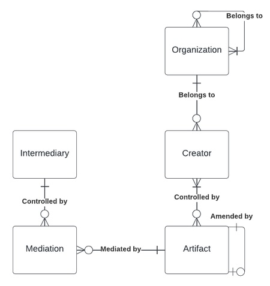

Noosphere Decentralized Identifier Method Implementation
March 20, 2024
Motivation
This design is the product of collaboration between Noosphere Technologies and the Department of Computer Science at Carnegie Mellon University. The research was conducted as a capstone project, sponsored by Noosphere Technologies, within the graduate program at CMU. The proof-of-concept resulting from this project forms the basis of Noosphere Technology's digital trust services.
Among the first action items in the Noosphere’s construction was to create a means through which all entities within the Noosphere may be uniquely and universally identified. A key goal of Noosphere freedom from centralized moderation or censorhip. Thus, entities within the Noosphere must be identifiable without recourse to a centralized source of truth. These factors strengthened the motivation to architect the system based on Decentralized IDentifiers (DID).
Before creating a new DID method, we reviewed several existing methods for issuing DIDs through various Distributed Ledger Technologies (DLT) including both the Bitcoin and Ethereum blockchains. We found that existing DID methods could generally be divided into two categories: those which issue an identifier for a single type of entity (e.g. a file in IPFS), and those which issue an identifier to any entity within a given DLT. Thus, given the Noosphere’s purpose within the realm of digital media, we found it appropriate to implement a new DID method to issue identifiers to those entities specifically existing within this domain.
We aimed to develop the Noosphere’s DID method with a few key considerations. First, we wanted to ensure that DIDs issued within the Noosphere reflected fundamental entities within the domain of internet media. Second, we wanted the new method to build on the constructs set forth by JournalList’s trust.txt specification to emphasize the relationship between the two. Finally, we wanted to develop a method that plays into the idea that readers can curate their personal network of trusted entities, which is a fundamental principle of the Noosphere.
DID Entities
Putting these considerations together yielded what we believe to be an effective means to identify all entities within the Noosphere using a unique DID which, due to the requirement of a DID being globally unique, means that a Noosphere DID would serve as a universal identifier for the corresponding entity. Our considerations of both the domain of internet media and the existing constructs of trust.txt led us to establish the set of entities, shown below, to which a Noosphere DID would be assigned.

At the Noosphere’s core are Artifacts, a generic entity type that represents all pieces of internet media that have been published to the Noosphere. An Artifact is controlled by one or more Creators (think “content creators”--journalists, editors, publishers, “citizen journalists”, researchers, moderators, etc.), and any Creator that has control of an Artifact may amend the Artifact by publishing a new version. These versions of an Artifact are linearly linked through fields within the Artifact’s DID document. Specifically, the previousVersionId and originalVersionId fields can be set to point to the previous and original versions of an Artifact when an amendment is created.
Artifacts and Creators certainly are the core entities of the Noosphere. However, due both to the existing constructs included in trust.txt specification and to the notion of democratized moderation within the Noosphere, we found it necessary to expand the core set of entities to fit. As a result, we include a further three entities: Organization, Intermediary, and Mediation to represent higher-level entities within the Noosphere as well as those entities responsible for mediating Noosphere Artifacts. In our definition, an Organization is a controlling entity for which any number of Creators publish Artifacts.
The use of Organizations is based on the entity’s inclusion in the trust.txt specification, in which Organizations (Publishing Organizations, to be specific) can create and maintain a trust.txt document to communicate the entities to which an Organization belongs (Association) and the entities which belong to an Organization (member Organizations). Intermediaries and their corresponding Mediations will serve the critical role of annotating Noosphere Artifacts. For instance, an Intermediary may seek to fact-check a published Artifact or to notarize an Artifact given its digital signature and Creator’s signing key, which the Intermediary can achieve by publishing a new Mediation for the Artifact in question to further inform readers about the Artifact’s contents or general status.
One of the concerns we had while establishing this set of entities was that any person may claim themselves as an organization, creator, or intermediary. However, addressing this concern was part of our motivation to incorporate the constructs of trust.txt into the Noosphere Trust Graph and combine these constructs with that of a reader’s Trust Network. Thus, while any entity may claim itself to be an Organization, Creator, or Intermediary, the Noosphere leaves the choice up to the reader when determining (by way of the reader’s Trust Configuration) which entities will form the reader’s Trust Network.
DID Syntax and DID Document Structure
Once we had established this set of Noosphere entities, our next task was to determine the syntax that Noosphere DIDs would follow.
| did | = | “did:noosphere:” noosphere-id |
| noosphere-id | = | entity-type “:” id |
| entity-type | = | “org” | “c“ | “a“ | “int” | “med“ |
| id | = | [-a-zA-Z0-9]+ |
The critical piece of this DID syntax is the use of namespaces, indicated by the “entity-type” attribute, to distinguish between Noosphere entities. Although the use of namespaces does not extend the functionality of a DID, since the purpose of a Noosphere DID is still to act as a unique identifier for a corresponding entity, we found that we could use namespaces to help the Noosphere both enforce relationships between entities (see the previous DID entities diagram) and be better suited to accommodate readers’ Trust Configurations.
As is documented in the W3C DID specification, each Noosphere DID will resolve to a corresponding DID document. This document will contain some metadata to describe the corresponding entity, including both the entities DID and controller DID, as well as the methods (including public keys) used to verify the DID and any services related to the identified entity (e.g. an IPFS link for an Artifact). This DID document structure, as well as a few examples for the previously discussed entities, can be found in this repository created by the Noosphere team.
Conclusion
While our work on the Noosphere continues, we continue to build and refine the Noosphere’s DID method. However, we believe that the set of entities we have defined, as well as the syntax of Noosphere DIDs, will act as the foundation for the creation, consumption, and management of Artifacts within the Noosphere. Thus, we are excited to have the opportunity to share this work to the community, and our excitement only grows as we continue to architect and implement the core components and infrastructure to make the revolution of the Noosphere a reality.